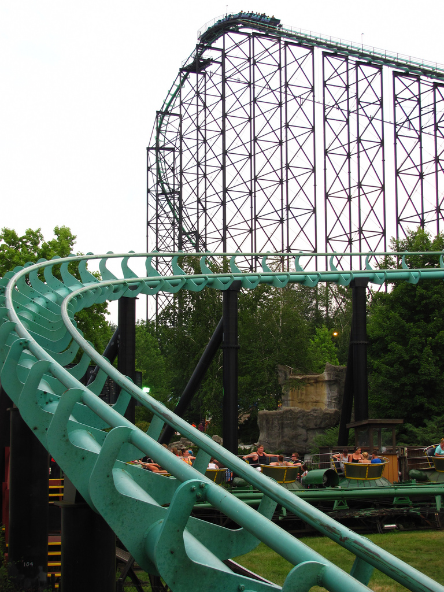

This is my neighbor's
dog from last year. She was so adorable and fluffy but now she is a big dog, still cute, but I
preferred her when she was this size.
The beach, summertime,
and a beautiful sunset are some of my favorite things.

This is my favorite rollercoaster at my favorite amusement park called Phantom's Revenge.